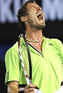
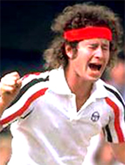
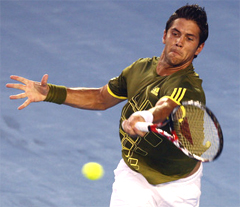

Previous: One-Handed Backhand Preparation | 🏠 Classic Lessons Home | Next: Practice and Dominance
Personality and Playing Style
Comprehensive unified tennis knowledge base — Fundamentals, Stroke Analysis, Reference Library, and more
Personality and Playing Style
By Kerry Mitchell




How do tennis personality types affect playing style?
My strengths as a coach and instructor are usually analyzing stroke technique, seeing patterns, and helping players translate those things into a winning game. The psychology of the game I usually leave to the experts, meaning my fellow Tennisplayer contributors, who are among the most esteemed students of the mental game in the world. (Click Here).
But in this article I want to verge into that field by addressing the issue of tennis personality types. As in other aspects of life, in tennis we handle things on the tennis court based on our personality type. When a person is playing a match his or her personality determines the reaction to all situations. It doesn't matter whether those situations are stressful or successful. These reactions often determine what kind of choices we make, and those choices can determine a win or a loss.

Federer and Nadal both blend elements of the opposite into their dominant type.
Two Basic Types
The two obvious personality types that I will discuss are the aggressive personality (hitter or shotmaker) and defensive personality (grinder or pusher). I want to address how this basic distinction determines our success on the court. But more importantly I want to address also how you as a player can adjust your training to produce better results - by incorporating some elements from the other style, while still staying within your basic type. I will also talk about how sometimes appearances can be deceiving in terms of determining your own personality type.
The personality that a person is born with basically determines what kind of player you will become, but that doesn't mean that a player can't make relatively small changes to his or her game that result big leaps in competitive success. So the first step is to actually what type of personality player you are. What is interesting to me in all of this is that appearances can be deceiving at times. The key to recognizing your personality type is to see where, how, and when errors occur.
For example, a tour player whose basic personality type has been misunderstood is Andy Roddick. Most people think that with his big serve, big forehand and his hyper personality, he must be an aggressive personality type player. But I think the opposite.
The use of the slice is a sign of Andy's true personality type.
If you really look at his game, other than his serve, he struggles with being aggressive. This can be explained by understanding his development. Until late in his junior career, when he grew physically and the serve began to develop, Roddick was a smaller than average, very determined player who depended on his consistency to win matches. This often meant looping his forehand under pressure instead of trying to hit aggressive shots.
And today he still struggles with staying aggressive under pressure with his forehand. His use of the slice backhand to rally is another sign of his true personality type.
Brad Gilbert, who coached Roddick all the way to number one in the world, always had the same mantra for Roddick's game, and that was that he had to hit his forehand (flatten it out) and stay aggressive in the points. The point to understand is that this more aggressive approach was an addition or an adaptation, something that often went against Andy's natural inclinations.
So, whether you are Andy Roddick or a 3.0 club player, the basic idea here is simple. Your goal should be to understand your own personality type, to control the extreme tendencies in your type, and at the same time incorporate some of the opposite personality type into your game.
The aggressive personality type likes to hit his way out of trouble.
Melting Types
The reality is that the best players in the world often are a melting of the two personality types. You can't find any two better examples than Rafael Nadal and Roger Federer. Federer has always prided himself on his ability to play defense. And Nadal's ability to hit more and more aggressive shots, especially under pressure, has been the key to his ascendancy.
But for many players, this melting process is often a real struggle. This is because your dominant personality type wants to control how you react, so things often occur "automatically" because of this. The challenge is to recognize that this happens, understand your natural tendencies, and then make changes both mentally and physically that will bring about this melting process.
Aggressive Personality Type
Fits of rage are often characteristic for the aggressive personality.
I define the aggressive personality type as a player who would rather hit his way out of trouble than pull back and play more conservatively. This type of player attacks either by moving forward or by hitting very aggressively from the baseline, even when on the run. Risk taking in stressful situations is much more prevalent.
Results in tournaments tend to be inconsistent for this type of player. The word "streaky" is often used by their opponents to describe aggressive players. For this type of player errors come more often from over hitting than what I call "under hitting," something I will describe in more detail below.
Being overly emotional on the court is another quality of this personality type. Fits of rage and fits of exuberance can come from one point to the next. Some examples of players on the tour that fit this type of personality are Novak Djokovic, Fernando Gonzalez, Richard Gasquet and Marat Safin. In my experience this type of player is less inclined to technical instruction. He or she responds more often to a type of coaching that inspires them emotionally.

Verdasco moderated his personality type all the way to the Australian semi.
Mental Changes
What does the aggressive personality type player need to change to become more competitive and consistent on the court? Those changes include mental, tactical, technical and physical. The main mental change that needs to occur is developing a calmer outlook. Often an aggressive personality type will be emotionally explosive, and the explosion can be either super negative or super exuberant. Finding a middle ground emotionally is very important.
Federer in the juniors and early in his professional career was very much like this. He had big emotional swings not only between games but between points, and this created inconsistent results. Everyone saw his talent, but it wasn't until he was able to get his emotional game under control that things started to go his way in a dramatic fashion. He added a mental patience to his game that wasn't there before.
Another obvious recent example is Fernando Verdasco. His success at the Australian Open came from emotional and mental changes, changes in his willingness to stay in tough points, to fight, and to stay positive as his matches swayed back and forth.
Reactive thinking can lead to emotional upsets that effect performance.
If you can develop this same new-found calmness and emotional evenness, it will help make the decision making process clearer, especially at critical points in matches. The difficult thing about achieving this mental calmness is that the player has to start thinking more in general.
He has to think about where he is in a match and how that situation should affect decisions technically and tactically. This is very difficult sometimes for aggressive players because their best performances often come when they react and don't think too much.
But some of their worst performances occur because of this reactive, non-thinking process as well. Learning to mentally analyze situations goes a long way in helping to develop the mental calmness that is necessary for more consistent outings.
Often aggressive type personality players feel that too much analysis can lessen their intensity and create a poor performance. And initially it can. But if they are open to the process, they find that every situation they face doesn't warrant a strong emotional response and the corresponding ups and downs. Cultivating this skill simply gives the aggressive player more options when stressful situations arise in a match.
Early in his career Federer made technical improvements with his backhand.
Technical Changes
So, what does this mean technically? The aggressive personality type player needs to start to understand his own technical capabilities more clearly. If a player better understands how to hit a high technical quality attacking forehand, they may execute that forehand better, more often. This will mean higher shot percentages that will their attacking game even more formidable.
We can see this in Federer's development on his backhand. You could see from the beginning of his rise that he had a very clear sense of his forehand and how to use it to his advantage, but his backhand was another story. I believe this is what his former coach Peter Lundgren (who initially took him to #1) was able to do for him.
They worked on the technique and Federer himself really put his mind to understanding his own backhand better and how it worked. This technical improvement was a key in his rise to number one. Again, this type of technical training requires more thought and analysis than an aggressive personality type usually finds comfortable. As I mentioned before, this type of player likes his training to be more supportive emotionally and less about technique.
Becoming less erratic under pressure - key for the aggressive player.
The areas of technical training that need to occur the most are on those attacking shots that make your game more successful - serve, forehand, overhead, volleys, etc. That includes all areas of technique: preparation, footwork and the swing. A player may have an awesome forehand when it lands in but tends to be erratic under pressure especially when facing his nemesis player, the "pusher." A little more clarity on the physical execution of the shots can make the difference between winning and losing.
Tennis is about numbers and percentages. If technically improvements in an attacking shot increase the number that land in even by a small percentage, that can go a long way toward winning a close match. The quality of a player's technique has a direct bearing on shot velocity. The better the technique the harder it can be hit with success. I call this the "speed limit". This concept is crucial for the aggressive personality type player to understand. This kind technical training can be difficult, but the results will be worth it.
Aggressive players often must train to use slice and other defensive shots.
Tactical Changes
Learning to be better defensively and creating better tactical patterns are the next steps in making the aggressive personality type player more successful. On the defensive, this type of player will often "pull the trigger", going for a big shot. The instinct is just to blast his way out of trouble.
This type of player is less likely to throw up a lob or slice a low ball back at an incoming player. The glory of the one big shot often becomes like a drug. When a player makes it, it gives him/her that moment of extreme exuberance which keeps him emotionally involved in the match. But if he misses it, it leads to an emotional fall which can take him out of the next few points. It can even lead to total collapse if these shots are missed too often.
Even when a player like this does try to play defense, he often lacks the same skill level in lobbing or slicing, compared to his aggressive shots. So, this creates even more resistance to using them.
Small Space Big Space
To improve his defensive shot making, the first thing an aggressive player has to learn is a different concept of shot targeting. Often the problem in playing better defense is more one of placement rather than velocity or style of shot. The principle is what I call "small space, big space". Too often the aggressive personality type player will aim a defensive shot to a small section of the court - as if it were going for a winner. This means that even when he thinks he is playing defense, he tries to hit an extreme angle (very small space) or go down the line with the intent of landing it on the line (even smaller space).
Deep down the middle is a great defensive play.
A change in thinking is required to choose the larger parts of the court on defense. This obviously will raise the percentage of shots that actually land in.
As I've written in previous articles, players should often use the deep center of the court as a target area for defensive shots. This is also a great play on first serve returns (Click Here.) The advantage is that the deep center ball does not create an angle for the opponent. And it gives the opponent a chance to make an error out of frustration, if the center ball neutralizes his previous advantage.
Again, percentages matter. A handful of points separate the winner and loser in a close match. If the aggressive player can stay in a higher number of points with a few defensive shots, the number of points he wins will likely go up as well, possibly swinging the balance in the match.
Another viable option is to go deep cross court with a heavy, looping defensive shot. This can often push the opponent back, forcing him or her to play a neutral instead of an attacking shot.
I feel this shot can a bit more risky because if it is not hit quite deep enough and the player is well off the court, the opponent may be able to hit a winner. But it makes especially good sense when the crosscourt is aimed to the opponent's weaker side. The further out of position you are, however, the more important it is to put the ball higher and deeper to give you recovery time.
The second key to better defense for the aggressive player is usually technical. This means getting more proficient at the execution of shots that the player may look down upon as weaker or inferior. These include especially the slice, and the lob. These shots may be used quite infrequently, but if the player can execute them well when he really needs them, they can be the difference between winning and losing.
Playing key patterns like the forehand inside out and inside in is critical.
Patterns
Often aggressive style players, particularly at the lower level, have poor attacking patterns to begin with or none at all. They rely on just hitting the ball as hard as possible without much thought to where, and just hope it doesn't come back.
The basic pattern of going cross court until the player receives a short reply is where to start. Another basic pattern that isn't utilized enough at the club level is the forehand hit inside out, then inside in.
The question to ask about all patterns, is whether there is too much impatience. When hitting inside out forehands does the player pull the trigger too soon with the inside in? Does he try to hit the final shot into too small a space because he has not opened the court sufficiently? Working on requires practice, but to do it successfully also takes that same mental calmness I described above.
One last training aspect for this type of personality is physical stamina training. Players who play aggressive may fear adding more shots and longer points, because win or lose their matches don't tend to test their condition. Doing more stamina type training and building aerobic capacity (longer sessions on the bike or the treadmill at the gym) will go a long way in calming the mind and body when on the court. The willingness to stay in points longer will be there because the player knows he/she can go the distance.


Defensive players: steadier point to point and match to match.
Defensive Personality Type
Compared to the aggressive player, the defensive personality type player tends to be more steady not only from point to point but from match to match. This type of player may not have as many great wins, but definitely tends to have fewer bad losses.
There is a tendency to play the ball back without too much risk, often hitting high over the net, or with slice. The ball speed tends to vary more, but tend to stay mainly in the slower speed zones, regardless of level.
Variety of shot and consistency are the trade marks of this type of player. Defensive players tend to be quicker and speedier around the court. They also tend to naturally resist moving forward into the court into a more attacking position.
Opponents often describe these players in derogatory fashion as "pushers". But at the same time they fear competing against them because of their natural tenacity and their high percentage style - both of which makes them very difficult to defeat.
A defensive tendency - to become more defensive under pressure.
But there are definite limitations to the defensive style. These are the limitations that defensive players need to overcome to get to the next level. The first limitation is to become even more defensive under pressure. This can result in punching or guiding the ball. This is what I call "under hitting."
Under extreme pressure blocking alone predominates in their game, and their compact strokes can contract to the point of non-existence. This lack of a swing and a follow through can cause control errors and result in unexpected and uncharacteristic control errors. Often defensive players with these tendencies will have unexpected breakdowns and loses to players they would usually wear down.
Technical Changes
This type of player tends to like to learn new things technically. But often they won't use a new technique in match play because it represents what they see as an unnecessary risk. The aggressive personality type player has to force him/herself to hold back and play safer. Conversely, the defensive personality player has to force him/herself to take a chance and go for that big shot, at least on occasion.
Defensive players can incorporate offense by coming forward.
On the whole this type of player tends to be more successful at his or her own level than aggressive player. They win the matches they are supposed to win. But defensive players are often frustrated when trying to move to the next level. The changes required to move up are a big risk for this type of player and are often resisted.
Professional players who fit this personality type are Michael Chang, Lleyton Hewitt and, of course, Rafael Nadal. On the tour these types of players often have a shorter life span at the top of the game. They have to grind out every match. The total amount of balls they have to play to win can become more difficult over a long career. Without weapons to end points quickly they can see a quick decline in their success with only small loses in their movement, or their determination and effort level.
Mental Changes
Now let's take a look at the mental and physical changes that have to occur to make this personality type player even more successful. Just as with the aggressive type player, the mental changes can be the toughest.
The mental dynamic of taking opportunities is key for defensive players.
The first mental hurdle is the willingness to try new techniques in matches. These can be practiced in matches of no consequence, especially practice matches, or by even moving down a level where losing becomes less likely. Mistakes by "going for it" should be viewed as a positive.
The next mental hurdle is to become more relaxed on the court so that free swinging and the technical changes can occur more often. Mentally these players have to understand and accept how their mistakes under pressure can come from "under hitting."
Moving forward into the court is another related mental hurdle to overcome. Often these players actually volley well. It's not the physical dynamic that prevents them from moving forward, but the mental one. So again, these players have to practice and learn to take the risk of coming in. This is best accomplished in practice or low pressure competitive matches. The defensive player, however, has to overcome the natural resistance to try this.
Technical Changes
One important thing in becoming more aggressive is to learn better footwork inside the baseline. Being aggressive with the feet can mean gaining court position on shorter balls, and this can translate into being more aggressive in the mental dimension. So smaller quicker steps can turn a normal shot into a winner.
Learning to develop at least one bigger shot, is another critical change. But often defensive types trying to play more aggressively try to change too many things at once.
A player with a good forehand can add aggression playing riskier down the line shots for winners.
In my opinion this was the mistake Michael Chang made when he tried to take his game to the highest level. He tried to make every shot bigger - forehand, backhand and serve. His first serve percentage dropped from the 70% range down to 40% range.
Being consistent has to remain the core element. Hitting bigger but being less consistent will not win more matches. The best thing to do is to isolate very specific situations where more aggressive shot making can pay off.
I can site an example from my experience coaching a lower-level touring pro who had the defensive personality type. His forehand was his best shot and at times a weapon, but he only used it effectively when hitting into the big spaces on the court. This was mainly going crosscourt and inside out.
I helped him develop the ability to use his forehand to hit winners down the line - using a much smaller and therefore riskier space. At first, he resisted the idea, and struggled with his consistency, but after a few weeks it became a standard in his game, and part of some big wins in local pro tournaments.
Nadal has improved every dimension of his aggressive game.
Again, this type of player shouldn't move away from their own personality type too much. If you have a consistent second serve, try to improve the velocity and accuracy of your first serve, but never lose sight of serving with consistency and good percentages. If you have the world's best crosscourt forehand, work on a down the line penetrating forehand to use at an opportune moment to turn the tide in your favor.
Obviously, the biggest example of this type of change at the highest level is Rafael Nadal. He has maintained or even improved his incredible court coverage but added more aggressive shot making in many dimensions.
He has improved his serve (without losing his great percentages) and he has been able to flatten out his forehand which he uses at key times. And the same or even more so is true on his backhand.
In addition, he is not afraid to go to the net and has come up with winning volleys at critical times. Because of this I believe Nadal may be around at the top of the game a lot longer than previous defensive personality type players.
Tactical Changes
The defensive type of player tends to be tactically stronger than the aggressive type of player. But at the same time there is a tendency to remain in defensive positions when there are opportunities to attack. This strategy may be fine at lower levels, but if you really want to move up, you have to diversify with aggressive tactical elements.
Again, it's not a complete turn around. It means taking a few more risks to transit from defense to offense when there are opportunities. For example, on a big point taking a short ball and coming in and forcing the opponent to hit a pass. Or being more aggressive going down the line when in trouble, hitting flatter and with more velocity instead of hitting the safer moon ball.
Or another example, if the opponent comes to net, playing an aggressive topspin ball at the feet of the net rusher and then moving forward inside the baseline, looking for a short reply, and trying to hit a winner, instead of playing a slice or a lob.
Guillermo Canas, another defensive player who can come forward at key moments.
The last and most important tactical change is learning to move forward when the opportunity presents itself. This is the most important thing because at higher levels this is where the game is often won. Yes, I have described Chang, Hewitt, and Nadal as defensive players, but they are not afraid to move into the short court when necessary to gain an advantage.
Guillermo Canas is another example - when he returned to the tour, he retained his incredible tenacity but came up with some big wins in part because of adding well timed opportunity attacks. The frequency or percentages may not be as high as naturally aggressive players, but the fact that they can do it keeps their opponents off balance.
As a player learns about his/her game, patterns will start to present themselves. Knowing what personality type of player category you fall under will give you a better understanding of why success and failure occur. Again, the goal is to incorporate a few aspects of the other type into your game. The effort is to meld changes into your game without taking you out of your personality comfort zone. These changes are personal, not based on some theoretical formula.
They changes can be physical, mental or tactical. They may include one or all of these aspects discussed, but I have no doubt that understanding basic personality distinction and what it means has huge implications for any player or coach who takes it seriously.

Kerry Mitchell was a leading Bay Area teaching pro for 20 years. He developed numerous ranked junior players and coached a series of championship high school teams. He was highly ranked both sectionally and nationally in men's 30 and 35 singles.
After 15 years as the Head Teaching Pro at the John Yandell Tennis School in San Francisco, California Kerry and his partner are now splitting time between homes in Merida, Mexico and Toronto, Canada. He has continued to coach and to have great competitive success winning Canadian National seniors titles—not to mention continuing to write articles for Tennisplayer from his unique perspective.
Source: tennisplayer.net archive — Personality and Playing Style.docx (John Yandell teaching library, 2002-2022). Extracted and rendered as HTML for Tennis Future Lab.